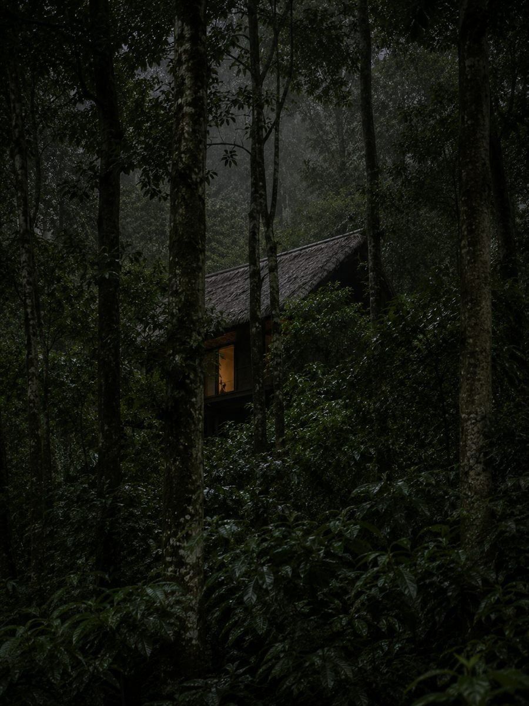
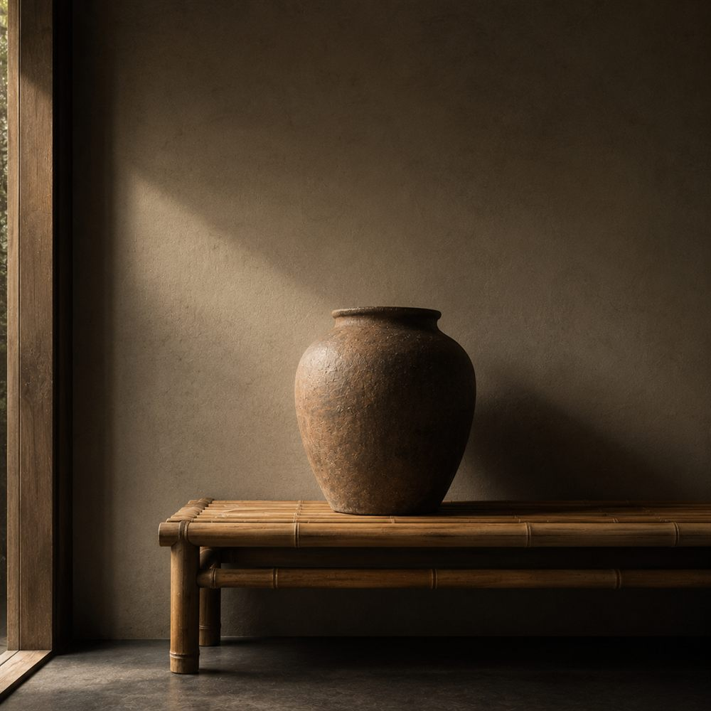
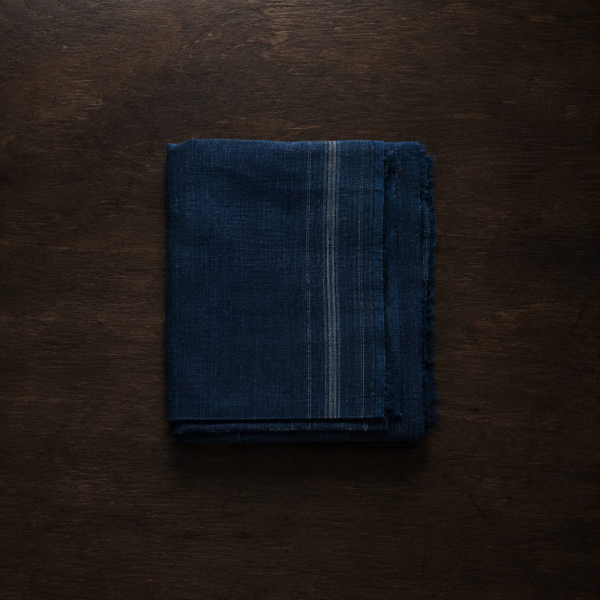
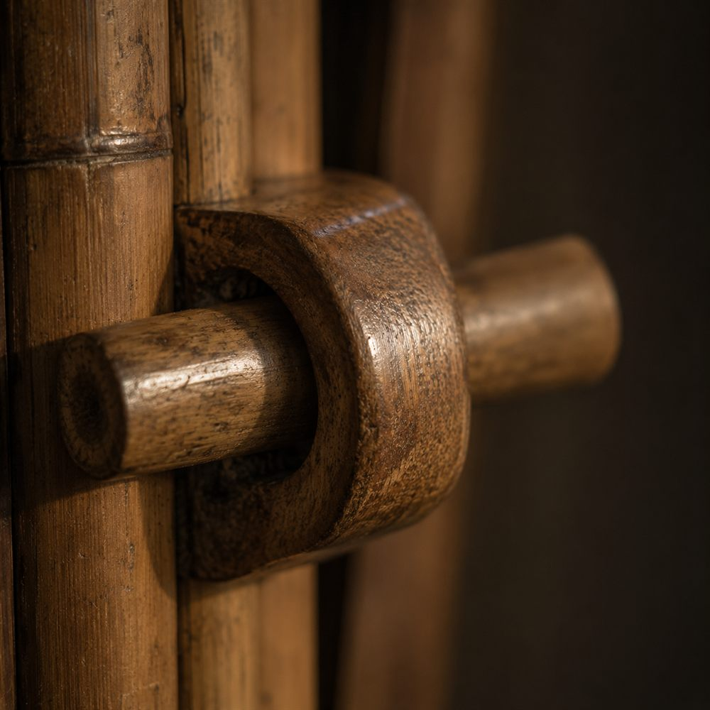

Leuweung
Leuweung, dari bahasa Sunda: hutan.
Paling jauh dari jalan setapak utama. Dari luar yang terlihat cuma garis atap dan satu pintu yang menyala.
Ditutup kanopi, jadi tidak pernah kena matahari langsung. Terangnya hijau, dan rata sepanjang hari.
- Luas
- 64 m²
- Tamu
- 4 orang
- Menghadap
- Hutan
- Tarif
- mulai Rp 3.400.000 / malam
Serangga malam yang berhenti serentak kalau ada yang lewat.
Tipe Julang
Dua ruang tidur mengapit ruang tengah terbuka. Panah menunjukkan arah matahari pagi, karena itu yang menentukan letak bukaannya.
Yang dipakai di sini

Bambu
Ditebang saat bulan tua supaya tidak dimakan kumbang. Dibelah, direndam, lalu dianyam di tempat.

Atap ijuk
Serat aren, dipasang berlapis-lapis. Menahan panas, dan mengubah hujan jadi suara yang rata.

Lantai tanah padat
Tanah setempat ditumbuk sampai keras, disapu tiap pagi. Dingin di telapak kaki sepanjang hari.



Geser untuk melihat selebihnya.